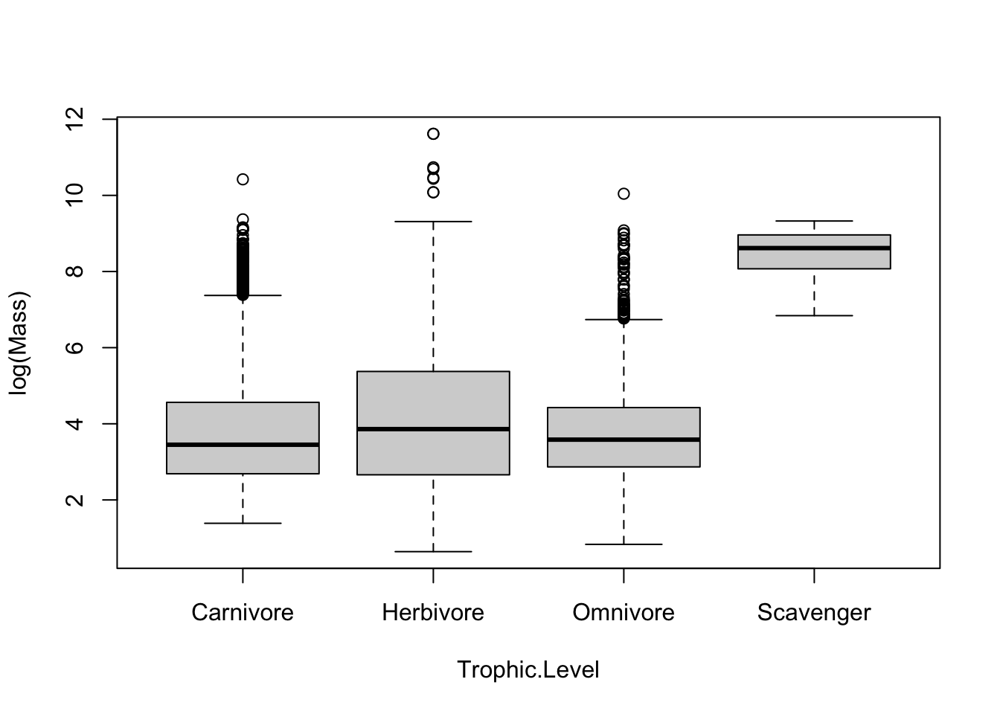
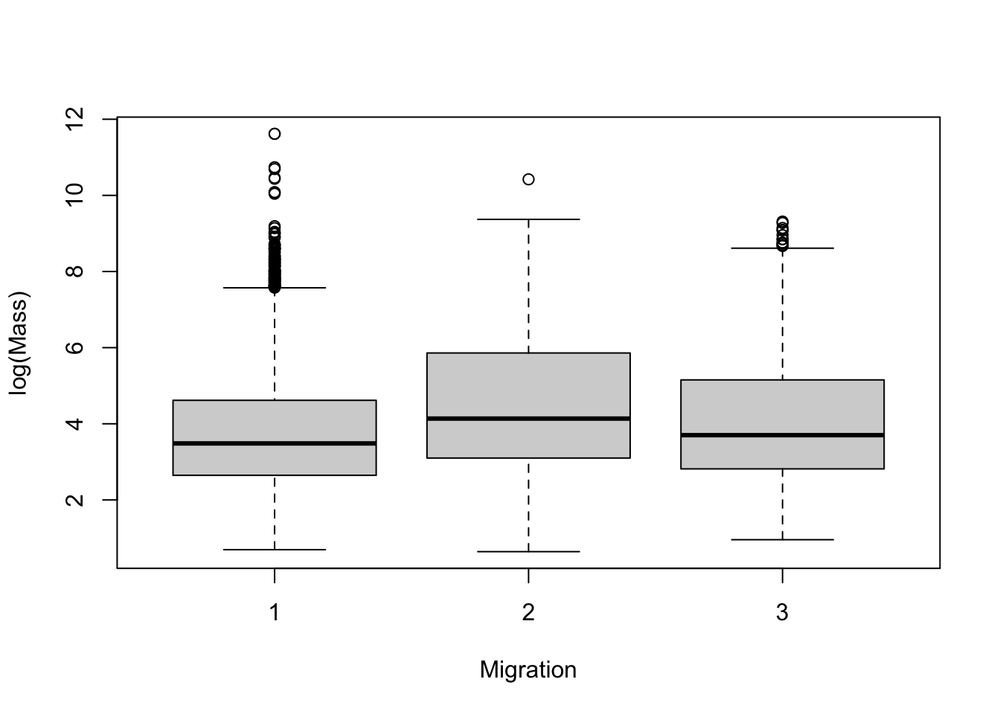
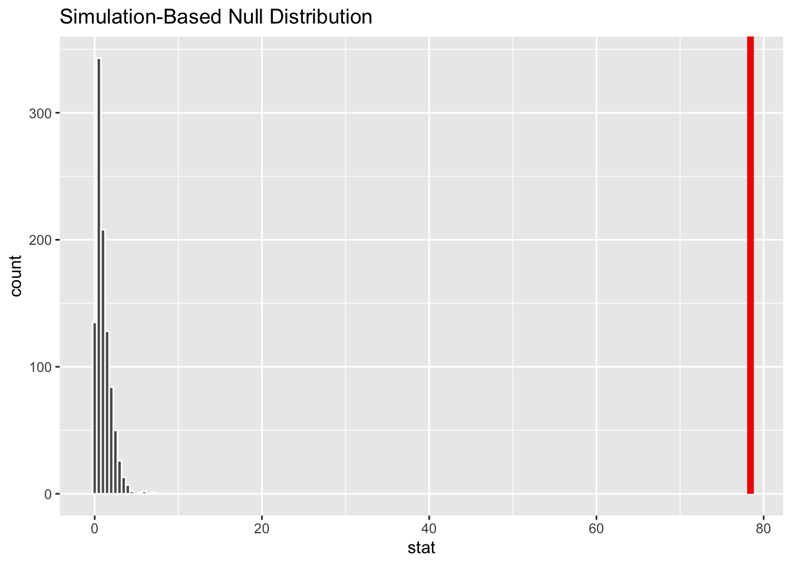
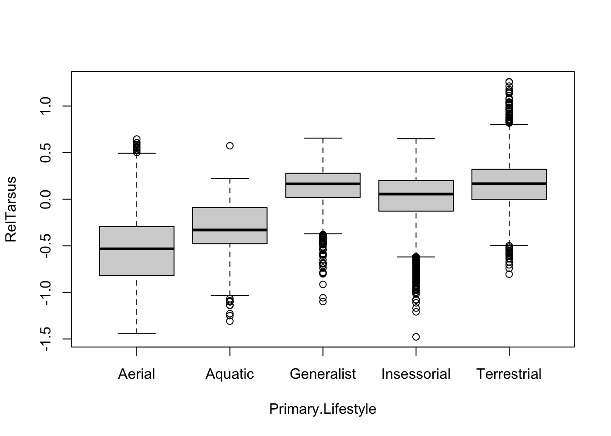
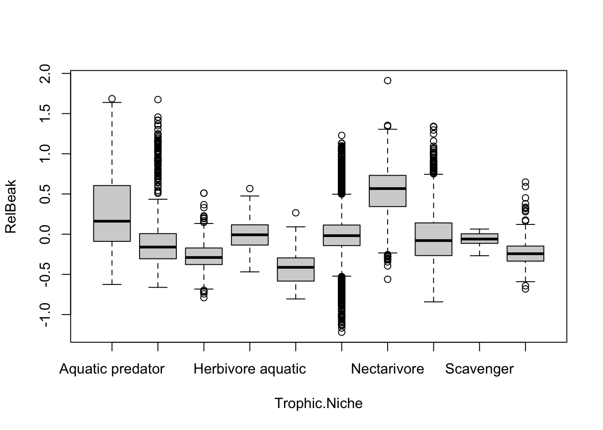
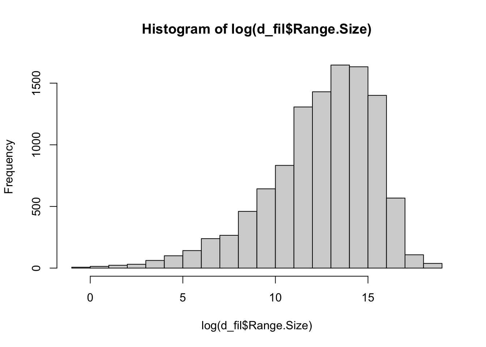
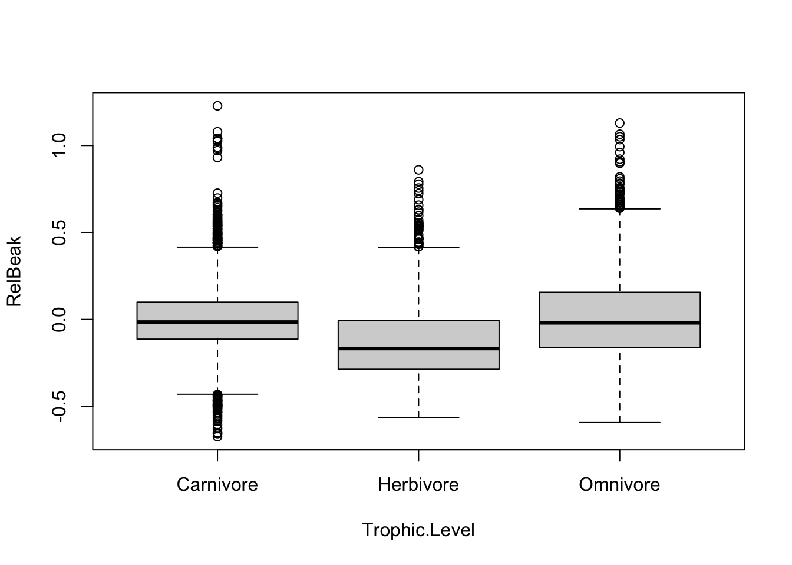

Categorical variables are species, family, order, habitat, trophic level, trophic niche, primary lifestyle. Migration should also be a categorical variable.
Challenge 1: one-way anova
Step 1
d1 <- d %>%drop_na(Trophic.Level)boxplot(log(Mass) ~ Trophic.Level, data = d1)

d2 <- d %>%drop_na(Migration)d2$Migration <-as.character(d2$Migration)boxplot(log(Mass) ~ Migration, data = d2)

Step 2
m1 <-lm(log(Mass) ~ Trophic.Level, data = d1)summary(m1)
Call:
lm(formula = log(Mass) ~ Trophic.Level, data = d1)
Residuals:
Min 1Q Median 3Q Max
-3.4229 -1.1551 -0.3028 0.8982 7.5526
Coefficients:
Estimate Std. Error t value Pr(>|t|)
(Intercept) 3.80834 0.01967 193.632 < 2e-16 ***
Trophic.LevelHerbivore 0.25639 0.03406 7.528 5.54e-14 ***
Trophic.LevelOmnivore 0.01422 0.04116 0.345 0.73
Trophic.LevelScavenger 4.63189 0.34447 13.446 < 2e-16 ***
---
Signif. codes: 0 '***' 0.001 '**' 0.01 '*' 0.05 '.' 0.1 ' ' 1
Residual standard error: 1.538 on 11000 degrees of freedom
Multiple R-squared: 0.02094, Adjusted R-squared: 0.02067
F-statistic: 78.42 on 3 and 11000 DF, p-value: < 2.2e-16
log(Mass) is associated with trophic Level, and F-statistic could reject the null hypothesis.
The reference level is carnivore. Herbivore and scavenger are different in log(mass) than the reference level.
Warning: Please be cautious in reporting a p-value of 0. This result is an approximation
based on the number of `reps` chosen in the `generate()` step.
ℹ See `get_p_value()` (`?infer::get_p_value()`) for more information.
# A tibble: 1 × 1
p_value
<dbl>
1 0
visualize(permuted.F) +shade_p_value(obs_stat = original.F$statistic, direction ="greater")

Challenge 2: two-way anova
Step 1
m1 <-lm(log(Beak.Length_Culmen) ~log(Mass), data = d)d$RelBeak <-residuals(m1)m2 <-lm(log(Tarsus.Length) ~log(Mass), data = d)d$RelTarsus <-residuals(m2)
Step 2
boxplot(RelTarsus ~ Primary.Lifestyle, data = d)

boxplot(RelBeak ~ Trophic.Niche, data = d)

Step 3
d_fil <- d %>%drop_na(Range.Size)hist(log(d_fil$Range.Size)) # Transformation needed

d_fil$Migration <-as.character(d_fil$Migration)mod <-lm(log(Range.Size) ~ Migration, data = d_fil)summary(mod)
Call:
lm(formula = log(Range.Size) ~ Migration, data = d_fil)
Residuals:
Min 1Q Median 3Q Max
-14.5710 -1.4521 0.4357 1.9763 5.9271
Coefficients:
Estimate Std. Error t value Pr(>|t|)
(Intercept) 12.03381 0.02974 404.62 <2e-16 ***
Migration2 1.78469 0.08606 20.74 <2e-16 ***
Migration3 2.51702 0.09380 26.83 <2e-16 ***
---
Signif. codes: 0 '***' 0.001 '**' 0.01 '*' 0.05 '.' 0.1 ' ' 1
Residual standard error: 2.785 on 10934 degrees of freedom
(15 observations deleted due to missingness)
Multiple R-squared: 0.0869, Adjusted R-squared: 0.08674
F-statistic: 520.3 on 2 and 10934 DF, p-value: < 2.2e-16
Range size is associated with migration style. 8.67% of variance in the measure of range size is associated with Migration behavior style. The reference level is Migration style 1. Both 2 and 3 are different than 1 in log range size.
Relative beak length and primary lifestyle are associated. From the test we could see that except for Terrestrial-Generalist, all the other primary lifestyles differ significantly from each other.
boxplot(RelBeak ~ Trophic.Level, data = d_pas)

mod2 <-aov(RelBeak ~ Trophic.Level, data = d_pas)summary(mod2)
Df Sum Sq Mean Sq F value Pr(>F)
Trophic.Level 2 16.31 8.154 174 <2e-16 ***
Residuals 6611 309.81 0.047
---
Signif. codes: 0 '***' 0.001 '**' 0.01 '*' 0.05 '.' 0.1 ' ' 1
(posthoc <-TukeyHSD(mod2, which ="Trophic.Level", conf.level =0.95))
Tukey multiple comparisons of means
95% family-wise confidence level
Fit: aov(formula = RelBeak ~ Trophic.Level, data = d_pas)
$Trophic.Level
diff lwr upr p adj
Herbivore-Carnivore -0.11871279 -0.135019333 -0.1024062 0.0000000
Omnivore-Carnivore 0.01790233 0.002415662 0.0333890 0.0185101
Omnivore-Herbivore 0.13661512 0.117352480 0.1558778 0.0000000
Relative beak length and Trophic level are associated. From the test we could see that all the trophic levels differ significantly from each other.
Step 5
mod3 <-lm(RelBeak ~ Primary.Lifestyle + Trophic.Level, data = d_pas)summary(mod3)
Call:
lm(formula = RelBeak ~ Primary.Lifestyle + Trophic.Level, data = d_pas)
Residuals:
Min 1Q Median 3Q Max
-0.65365 -0.13329 -0.02284 0.10274 1.20180
Coefficients:
Estimate Std. Error t value Pr(>|t|)
(Intercept) -0.349502 0.020958 -16.677 <2e-16 ***
Primary.LifestyleGeneralist 0.301517 0.022582 13.352 <2e-16 ***
Primary.LifestyleInsessorial 0.375698 0.021295 17.642 <2e-16 ***
Primary.LifestyleTerrestrial 0.302119 0.021942 13.769 <2e-16 ***
Trophic.LevelHerbivore -0.126397 0.006761 -18.695 <2e-16 ***
Trophic.LevelOmnivore 0.012140 0.006450 1.882 0.0599 .
---
Signif. codes: 0 '***' 0.001 '**' 0.01 '*' 0.05 '.' 0.1 ' ' 1
Residual standard error: 0.2096 on 6608 degrees of freedom
Multiple R-squared: 0.11, Adjusted R-squared: 0.1093
F-statistic: 163.4 on 5 and 6608 DF, p-value: < 2.2e-16
Birds that are not aerial tend to have larger beaks than aerial ones. Herbivores tend to have smaller beaks than carnivores, while omnivores are similar to carnivores.
Call:
lm(formula = RelBeak ~ Primary.Lifestyle + Trophic.Level + Primary.Lifestyle:Trophic.Level,
data = d_pas)
Residuals:
Min 1Q Median 3Q Max
-0.64623 -0.12836 -0.02078 0.10070 1.21924
Coefficients: (2 not defined because of singularities)
Estimate Std. Error t value
(Intercept) -0.34950 0.02066 -16.918
Primary.LifestyleGeneralist 0.33010 0.02367 13.948
Primary.LifestyleInsessorial 0.35826 0.02104 17.031
Primary.LifestyleTerrestrial 0.35714 0.02210 16.162
Trophic.LevelHerbivore -0.27502 0.01562 -17.608
Trophic.LevelOmnivore -0.11080 0.01550 -7.150
Primary.LifestyleGeneralist:Trophic.LevelHerbivore 0.05033 0.02584 1.948
Primary.LifestyleInsessorial:Trophic.LevelHerbivore 0.20115 0.01750 11.494
Primary.LifestyleTerrestrial:Trophic.LevelHerbivore NA NA NA
Primary.LifestyleGeneralist:Trophic.LevelOmnivore 0.09898 0.02351 4.210
Primary.LifestyleInsessorial:Trophic.LevelOmnivore 0.15527 0.01726 8.996
Primary.LifestyleTerrestrial:Trophic.LevelOmnivore NA NA NA
Pr(>|t|)
(Intercept) < 2e-16 ***
Primary.LifestyleGeneralist < 2e-16 ***
Primary.LifestyleInsessorial < 2e-16 ***
Primary.LifestyleTerrestrial < 2e-16 ***
Trophic.LevelHerbivore < 2e-16 ***
Trophic.LevelOmnivore 9.61e-13 ***
Primary.LifestyleGeneralist:Trophic.LevelHerbivore 0.0515 .
Primary.LifestyleInsessorial:Trophic.LevelHerbivore < 2e-16 ***
Primary.LifestyleTerrestrial:Trophic.LevelHerbivore NA
Primary.LifestyleGeneralist:Trophic.LevelOmnivore 2.59e-05 ***
Primary.LifestyleInsessorial:Trophic.LevelOmnivore < 2e-16 ***
Primary.LifestyleTerrestrial:Trophic.LevelOmnivore NA
---
Signif. codes: 0 '***' 0.001 '**' 0.01 '*' 0.05 '.' 0.1 ' ' 1
Residual standard error: 0.2066 on 6604 degrees of freedom
Multiple R-squared: 0.1358, Adjusted R-squared: 0.1346
F-statistic: 115.3 on 9 and 6604 DF, p-value: < 2.2e-16
Beak size increases in non-aerial ones, but trophic level modifies this. It is especially for herbivores and omnivores, whose beak sizes depend strongly on what kind of lifestyle they have. In particular, insessorial lifestyle further increases beak size very much in herbivores and omnivores.